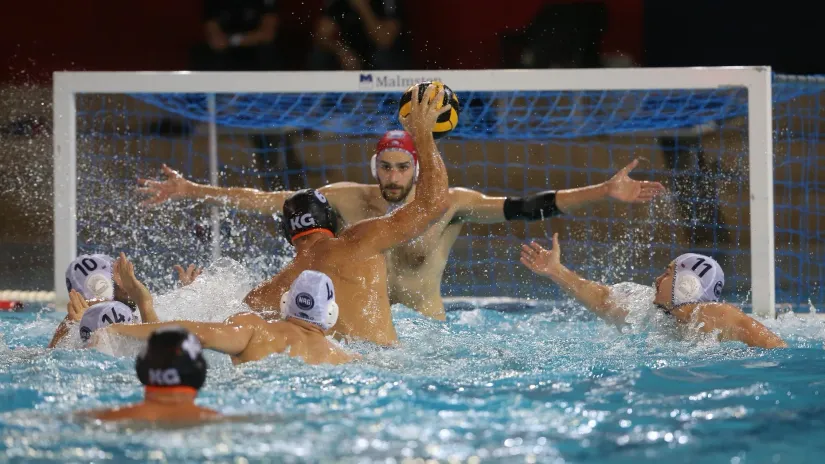

Padneš li u vatru, ostaćeš bez svega: Titula ide mentalno jačem
Kvalitet da postanu šampioni Srbije imaju i Radnički i Novi Beograd, ali će to biti onaj tim koji bude stoički prolazio kroz momente kada pomisli da mu je u bazenu naneta nepravda i ne bude rasipao energiju
Još jednom, za kraj, pa kud puklo da puklo. Ovako je, kako reče Duško Pijetlović, možda i najpravednije. Radnički i Novi Beograd oči u oči, sedmi put ove sezone. Za titulu, za označavanje takmičarske godine uspešnom. Jer, ukoliko neki od rivala i dođe do evropskog pehara u nadolazećim danima, to će biti čist bonus.
Spram onoga što večeras urade u Kragujevcu (20.30), da li će iz bazena izaći pognute glave ili će se u njemu zadržati još nekoliko minuta da proslave, meriće im se sezona. Ulog je titula, zvanje šampionom Srbije. Ali, i direktna prohodnost do grupne faze Lige šampiona.
Niti mogu, niti imaju šta da sakriju. Sve karte su otkrivene. Godinama se Uroš Stevanović i Živko Gocić gledaju iz dva ugla bazena i nadmudruju. Godinama i većina igrača iz oba tabora igra međusobno. Samo u tekućoj sezoni „krstili su koplja“ šest puta. I stanje na semaforu je sledeće: Radnički – Novi Beograd 3:3!
Sličnu sliku pokazuje i semafor sa trofejima. Nerešeno je i tu: Novi Beograd – Radnički – 1:1! Onaj prvi koji je dodeljivan u Šapcu poneo je sastav Živka Gocića za glavni grad Srbije. Regionalna kruna je u Herceg Novom završila na glavama vaterpolista kragujevačkog kluba.
Kada se sve uzme u obzir, očigledno je da nepoznanica nema. Teško je zaigrati na kartu iznenađenja. Tačno se zna ko je za šta zadužen. Oči u oči Nikola Jakšić i Miloš Ćuk, Radomir Drašović i Dimitris Skumpakis, Strahinja Rašović i Vasilije Martinović, Dušan Vasić i Angelos Vlahopulos, Duško Pijetlović i Miroslav Perković, Nikola Murišić i Bilal Gbadamasi...